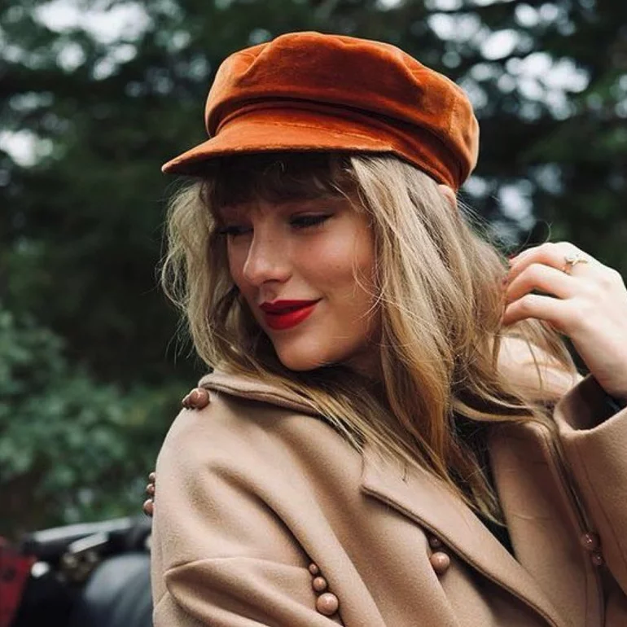
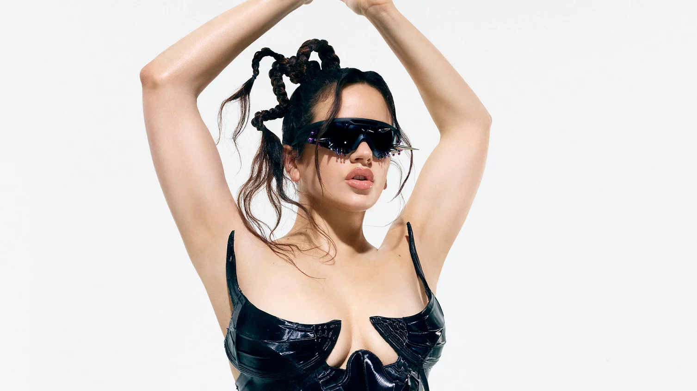

Es el octavo álbum de estudio de la cantante y compositora estadounidense Lana Del Rey. Fue lanzado el 22 de octubre de 2021 por Interscope Records y Polydor Records.
Blue Banisters es un recordatorio de que cuando la cantante y compositora está a cargo de su visión y aprovecha completamente sus emociones, es capaz de crear una belleza impresionante
Red (Taylor's Version)
Es el segundo álbum regrabado de la cantante y compositora estadounidense Taylor Swift, lanzado el 12 de noviembre de 2021 a través de Republic Records.
Es una regrabación del cuarto álbum de estudio de Swift, Red (2012), y sucede a su primer álbum regrabado, Fearless (Taylor's Version), que fue lanzado en abril de 2021.
La regrabación es la contramedida de Swift contra el cambio de propiedad de los másteres de sus primeros seis álbumes de estudio.
Melodrama
Melodrama es el segundo álbum de la cantante y compositora neozelandesa Lorde, lanzado el 16 de junio de 2017 por Republic Records.
Cuatro años después de que Lorde iluminara la adolescencia suburbana con Pure Heroine, captura la agonía vertiginosa de la adolescencia en Melodrama.
Arca
Arca es el tercer álbum de estudio de la productora venezolana Arca, lanzado el 7 de abril de 2017 a través de XL Recordings.
Es el primer álbum de estudio en contar con la voz principal de la propia Arca, cantada en su español nativo. Fue lanzado con aclamación universal de los críticos.
Planet her
Planet Her es un trabajo ecléctico que, tan solo en sus cuatro primeras canciones, bascula entre el eufórico afropop de “Woman” y el trap improvisado de “Get Into It (Yuh)”,
pasando por los guiños al reggaetón de “Naked” y la fusión de hip-hop e hyperpop de “Payday”. Y eso es solo el principio. El resto del álbum recorre estilos y enlaza baladas R&B con la música dance más frenética,
reafirmando la versatilidad de una artista que parece tan cómoda rapeando con Young Thug o JID como cantando junto a The Weeknd o Ariana Grande.
Humanz (Deluxe)
Humanz es el quinto álbum de estudio de banda virtual Gorillaz. Fue lanzado el 28 de abril de 2017.
Aunque de ninguna manera tan completo y satisfactorio como Demon Days o Plastic Beach, hay suficientes momentos intrigantes para hacer de Humanz una adición digna al universo de dibujos animados de Gorillaz.
Proximamente en Nuestra Tienda
Los Principales Artistas del Momento
Bad Bunny es un joven cantante, rapero y productor de música urbana originario de Puerto Rico. Este talentoso artista ha demostrado su ya abrumador poder, influencia y demanda con conciertos completamente agotados en toda Europa, América Latina y EE.UU.
Bad Bunny
61,450,654 oyentes mensuales

Taylor Swift es el más raro de los fenómenos del pop: una superestrella que ha conseguido pasar completamente del country al mainstream. Es una cantautora, productora, actriz, directora, diseñadora y empresaria estadounidense.
Taylor Swift
56,463,504 oyentes mensuales

Rosalia ha sido galardonada con dos premios Grammy Latinos por "Malamente" y cinco por su segundo álbum "El mal querer", lo que la convirtió en la artista española con más premios concedidos por la Academia Latina de Artes y Ciencias de la Grabación.